Aula 11 - Redes Sem Fio: Redes Celular/Mobilidade: Introdução
Diego Passos
Universidade Federal Fluminense
Redes de Computadores II
Na Última Aula...
Enlaces sem fio:
mais propensos a erros
.
Baixa potência, ruídos, interferências,
...
Necessidade de
múltiplas taxas de transmissão
.
Há ainda
terminais escondidos
.
CDMA: acesso múltiplo por
código
Transmissões
simultâneas, no mesmo canal
.
Códigos
ortogonais
garantem ausência de colisões.
IEEE 802.11: padrão para
WLANs
.
CSMA/CA
.
Não é possível detectar
(diretamente) colisões.
Solução: evitá-las, usar confirmações (
acks
).
RTS/CTS
.
Reserva do meio.
Modos infraestruturado e
ad hoc
.
Redes Celular
Histórico: 1G
Evolução das redes celular se deu em “gerações”.
1G, 2G, 3G, ...
Primeira geração:
Rede de voz.
Analógica.
FDMA.
Pouca interoperabilidade.
Histórico: GSM (2G)
Global System for Mobile Communications
.
Ou, originalmente:
Groupe Spécial Mobile
.
Padrão europeu.
Primeira implementação: Finlândia, 1991.
Mas eventualmente adotado no mundo todo.
Características:
Rede de voz.
Digital
.
Interoperabilidade (por conta da ampla adoção).
Histórico: 2.5G
Expansão do 2G para permitir tráfego de dados.
GSM + GPRS.
GPRS:
General Packet Radio Service
.
Serviço de
melhor esforço
.
Histórico: Outras Evoluções
3G.
Voz e dados.
Digital.
Várias tecnologias proveem taxas de transmissão diferentes.
3.5G, 3.75G, ...
4G.
Próxima evolução.
Principais tecnologias candidatas: LTE, Mobile WiMAX.
Embora o LTE pareça estar em vantagem hoje.
Maior compatibilidade com padrões anteriores.
Tecnologia 4G dominante no Brasil.
Componentes da Arquitetura da Rede Celular
Célula:
Cobre região geográfica.
Estação base
(BS): análogo ao AP no 802.11.
Usuários móveis
se conectam à rede através do BS.
Interface aérea:
camadas física e de enlace entre usuário móvel e BS.
MSC (
Mobile Switching Center
)
Conecta células à rede cabeada de telefone.
Gerencia estabelecimento de ligações (detalhes mais tarde).
Lida com a mobilidade (detalhes mais tarde).
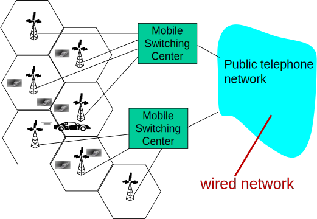
Rede Celular: Primeiro Salto
Duas técnicas usadas para lidar com acesso múltiplo:
Combinação de FDMA e TDMA:
Divide espectro em canais de frequências diferentes.
Cada canal é dividido em
slots
.
CDMA:
Códigos diferentes são atribuídos para usuários.
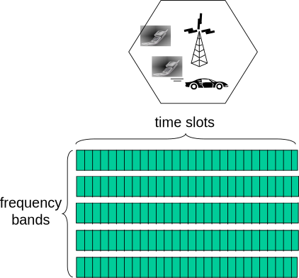
Arquitetura das Redes 2G (Voz)
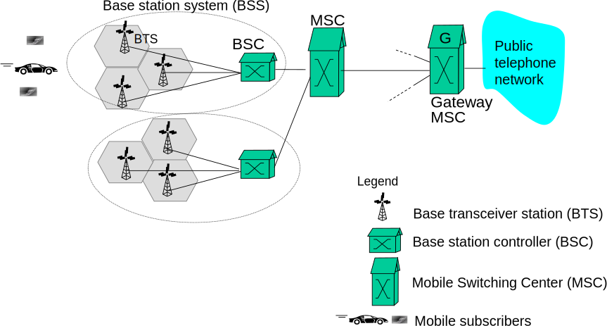
Arquitetura das Redes 3G (Voz+Dados) (I)
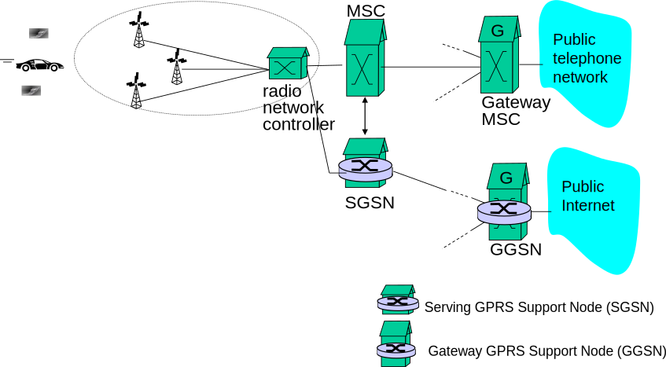
Ponto principal:
rede celular de dados opera em
paralelo
à rede de voz.
Núcleo da rede de voz permanece idêntico.
Rede de dados opera paralelamente.
Arquitetura das Redes 3G (Voz+Dados) (II)
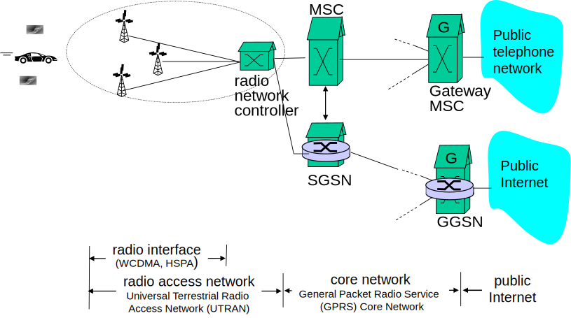
Mobilidade: Endereçamento e Roteamento para Usuários Móveis
O Que É Mobilidade?
Há vários
níveis
de mobilidade.
Espectro de mobilidade, do ponto de vista da
rede
:
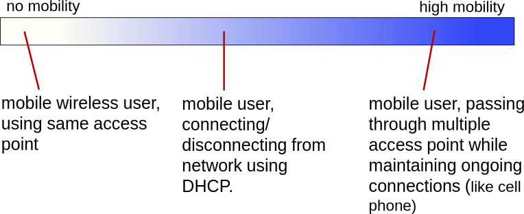
Mobilidade: Jargão
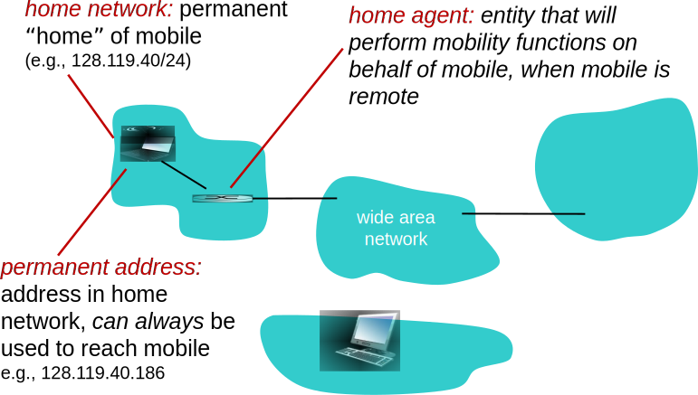
Mobilidade: Jargão (Mais)
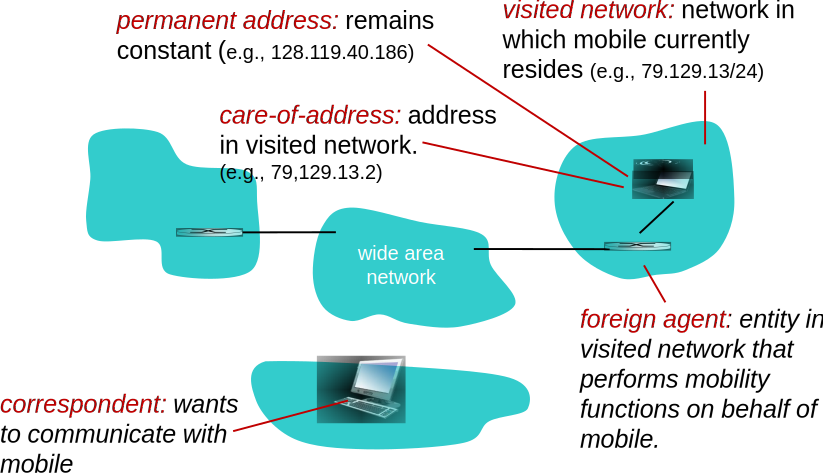
Como
Você
Contacta um Amigo Móvel?
Considere uma amiga que constantemente muda de endereço. Como encontrá-la?
Procurar em todas as listas telefônicas?
Ligar para os pais dela?
Aguardar até que ela entre em contato avisando onde está?
Mobilidade: Abordagens
Deixar que o roteamento resolva:
Nós móveis possuem endereços permanentes.
Quando nó se move para uma nova rede, roteador anuncia endereço específico através dos protocolos normais.
Tabelas de roteamento indicam localização do nó.
Não são necessárias alterações nos sistemas finais.
Deixar que os sistemas finais resolvam:
Roteamento indireto:
comunicação com nó móvel intermediada pelo
home agent
, que realiza o encaminhamento.
Roteamento direto:
nó remoto obtém o
care-of-address
do nó móvel, transmite diretamente.
Mobilidade: Abordagens
Deixar que o roteamento resolva:
Nós móveis possuem endereços permanentes.
Quando nó se move para uma nova rede, roteador anuncia endereço específico através dos protocolos normais.
Tabelas de roteamento indicam localização do nó.
Não são necessárias alterações nos sistemas finais.
Deixar que os sistemas finais resolvam:
Roteamento indireto:
comunicação com nó móvel intermediada pelo
home agent
, que realiza o encaminhamento.
Roteamento direto:
nó remoto obtém o
care-of-address
do nó móvel, transmite diretamente.
Mobilidade: Registro
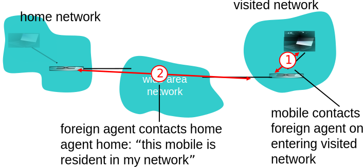
Resultado:
Foreign Agent
conhece nó móvel.
Home Agent
conhece localização do nó móvel.
Mobilidade Através de Roteamento Indireto
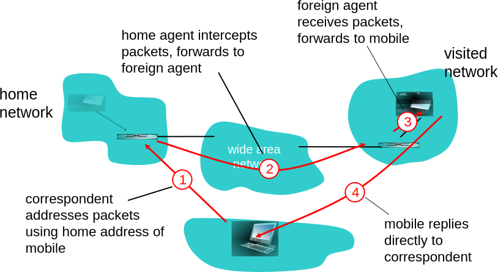
Roteamento Indireto: Observações
Usuário móvel utiliza dois endereços:
Endereço permanente (home address):
usado pelo nó remoto.
Logo, localização do nó móvel é transparente para o remoto.
Endereço temporário (care-of-address):
usado pelo
home agent
para encaminhar pacotes ao usuário móvel.
Funções do
foreign agent
podem ser feitas pelo próprio nó móvel.
Roteamento triangular
: remoto → rede de origem → nó móvel
Ineficiente quando nó móvel e remoto estão na mesma rede.
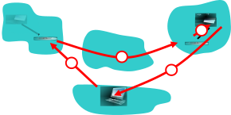
Roteamento Indireto: Migrando para uma Nova Rede
Suponha que o nó móvel migra para uma nova rede.
Se registra com o novo
foreign agent
.
Novo
foreign agent
se registra com o
home agent
.
Home agent
atualiza endereço temporário do nó móvel.
Pacotes continuam sendo encaminhados para o nó móvel.
Mas com o novo endereço temporário.
Mobilidade e mudança de rede são transparentes:
conexões em andamento podem ser mantidas!
Mobilidade Através de Roteamento Direto
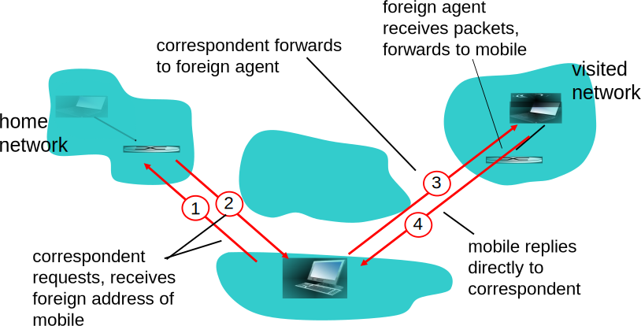
Mobilidade Através de Roteamento Direto: Observações
Resolve problema de roteamento triangular.
Mas não é transparente para o nó remoto:
Nó remoto precisa obter endereço temporário com o
home agent
.
O que acontece se nó móvel visita outra rede?
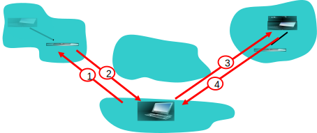
Mobilidade Através de Roteamento Direto: Lidando com Mudanças de Rede
Foreign agent
âncora: FA da primeira rede visitada.
Dados
sempre
são encaminhados através do FA âncora.
Quando nó móvel visita nova rede:
Novo FA pede que FA antigo encaminhe os dados para ele (encadeamento).
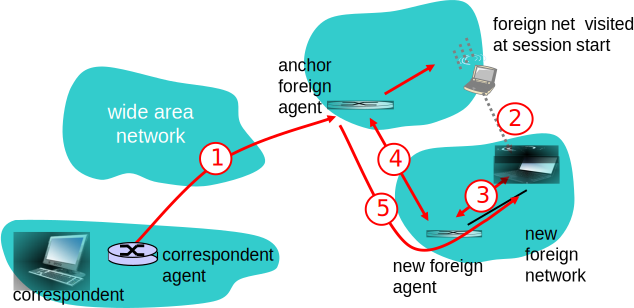
Resumo da Aula...
Redes celular: arquitetura.
Célula
: região de cobertura.
Composta por
estação base, usuários móveis
.
Células se conectam à rede cabeada de telefone por um
MSC
.
Responsável por
ligações, mobilidade
.
Redes celular: comunicação entre usuário e estação.
Pode ser
combinação de FDMA e TDMA
.
Ou
CDMA
.
Redes celular: evolução.
2G: somente voz.
3G: rede de voz idêntica,
rede de dados paralela
.
Mobilidade:
vários tipos
.
Dentro de um mesmo ponto de acesso.
Entre redes, obtendo novo IP.
Entre pontos de acesso, mantendo conexões.
Mobilidade: Jargão.
Rede de origem:
home network
,
home agent
,
endereço permanente
.
Rede de destino:
foreign-agent
.
Mobilidade: possíveis abordagens.
Atualização de
tabelas de roteamento
: não escala.
Sistemas finais:
roteamento direto ou indireto
.
Leitura e Exercícios Sugeridos
Redes Celular.
Páginas 401 a 405 do Kurose (Seção 6.4).
Questões dissertativas 2 e 5 do capítulo 6 do Kurose.
Princípios de Mobilidade.
Páginas 405 a 412 do Kurose (Seção 6.5).
Exercícios de fixação 16 e 17 do capítulo 6 do Kurose.
Problemas 11 e 12 do capítulo 6 do Kurose.
Próxima Aula...
Continuaremos discutindo mobilidade:
IP Móvel.
Mobilidade em redes celular.
Comparações entre as duas abordagens.